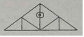
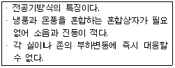

전산응용건축제도기능사 (2012-07-22 기출문제)
1과목: 건축구조
1. 돌구조에서 창문 등의 개구부 위에 걸쳐대어 상부에서 오는 하중을 받는 수평부재는?
- 문지방돌
- 인방돌
- 창대돌
- 쌤돌
(정답률: 84%)

2. 벽돌벽 등에 장식적으로 사각형, 십자형 구멍을 내어 쌓는 것으로 담장에 많이 사용되는 쌓기법은?
- 엇모 쌓기
- 무늬 쌓기
- 공간벽 쌓기
- 영롱 쌓기
(정답률: 60%)
3. 그림과 같은 왕대공 지붕틀의 ?표의 부재가 일반적으로 받는 힘의 종류는?

- 인장력
- 전단력
- 압축력
- 비틀림모멘트
(정답률: 60%)
4. 목구조에서 깔도리와 처마도리를 고정시켜주는 철물은?
- 주걱볼트
- 안장쇠
- 띠쇠
- 꺽쇠
(정답률: 57%)
5. 보강블록조에서 벽량은 최소 얼마 이상으로 해야 하는가?
- 10 ㎝/㎡
- 15 ㎝/㎡
- 20 ㎝/㎡
- 25 ㎝/㎡
(정답률: 85%)
6. 다음 중 막구조로 이루어진 구조물이 아닌 것은?
- 서귀포 월드컵 경기장
- 상암동 월드컵 경기장
- 인천 월드컵 경기장
- 수원 월드컵 경기장
(정답률: 58%)
7. 목구조에서 기초와 토대를 연결시키기 위하여 사용되는 것은?
- 감잡이쇠
- 띠쇠
- 앵커볼트
- 듀벨
(정답률: 48%)
8. 문꼴을 보기 좋게 만드는 동시에 주위벽의 마무리를 잘하기 위하여 둘러대는 누름대를 무엇이라 하는가?
- 문선
- 풍소란
- 가새
- 인방
(정답률: 66%)
9. 철근콘크리트보에서 전단력을 보강하여 보의 주근 주위에 둘러감은 철근은?
- 띠철근
- 스트럽
- 벤트근
- 배력근
(정답률: 42%)
10. 다음 중 아치(Arch)에 대한 설명으로 옳지 않은 것은?
- 조적벽체의 출입문 상부에서 버팀대 역할을 한다.
- 아치 내에는 압축력만 작용한다.
- 아치벽돌을 특별히 주문 제작하여 쓴 것을 층두리 아치라 한다.
- 아치의 종류에는 평아치, 반원아치, 결원아치 등이 있다.
(정답률: 66%)
11. 왕대공 지붕틀에서 보강철물 사용이 옳지 않은 것은?
- 달대공과 평보 - 볼트
- 빗대공과 ㅅ자보 - 꺽쇠
- ㅅ자보와 평보 - 안장쇠
- 왕대공과 평보 - 감잡이쇠
(정답률: 57%)
12. 다음 중 구조물의 고층화, 대형화의 추세에 따라 우수완 용접성과 내진성을 가진 극후판의 고강도 강재는?
- TMCP강
- SS강
- FR강
- SN강
(정답률: 61%)
13. 지하실 외부에 흙막이벽을 설치하고 그 사이에 공간을 둔 것이며, 방수, 채광, 통풍에 좋도록 설치한 것은?
- 드라이 에어리어
- 이중벽
- 방습층
- 선루프
(정답률: 60%)
14. 콘크리트 슬래브와 철골보를 전단연결재(shear connector)로 연결하여 외력에 대한 구조체의 거동을 일체화시킨 구조의 명칭은?
- 허니컴보
- 래티스보
- 플레이트거더
- 합성보
(정답률: 40%)
15. 도어체크(door check)를 사용하는 문은?
- 접문
- 회전문
- 여닫이문
- 미서기문
(정답률: 83%)
16. 홈통의 구성 요소 중 처마홈통 낙수구 또는 깔대기홈통을 받아 선홈통에 연결하는 것은?
- 장식통
- 지붕골홈통
- 상자홈통
- 안홈통
(정답률: 38%)
17. 철근콘크리트 구조에서 휨모멘트가 커서 보의 단부 아래쪽으로 단면을 크게 한 것은?
- T형보
- 지중보
- 플랫슬래브
- 헌치
(정답률: 63%)
18. 미서기창호에 사용되는 철물과 관계가 없는 것은?
- 레일
- 경첩
- 오목 손잡이
- 꽂이쇠
(정답률: 60%)
19. 조립식구조의 특성 중 옳지 않은 것은?
- 공장생산이 가능하다.
- 대량생산이 가능하다.
- 기계화시공으로 단기완성이 가능하다.
- 각 부품과의 일체화하기 쉽다.
(정답률: 72%)
20. 철골구조에서 판보(plate girder)구성재와 가장 거리가 먼 것은?
- 플랜지(flange)
- 웨브 플레이트(web plate)
- 스티프너(stiffener)
- 래티스(lattice)
(정답률: 46%)
2과목: 건축재료
21. 점성이나 침투성은 작으나 온도에 의한 변화가 적어서 동결에 대한 안정성이 크며 아스팔트 프라이머의 제작에 사용되는 것은?
- 로크아스팔트
- 스트레이트아스팔트
- 블로운아스팔트
- 아스팔트타이트
(정답률: 56%)
22. 점토제품 중 타일에 대한 설명으로 옳지 않은 것은?
- 자기질 타일의 흡수율이 3% 이하이다.
- 일반적으로 모자이크타일은 건식법에 의해 제조된다.
- 클링커 타일은 석기질 타일이다.
- 도기질 타일은 외장용으로만 사용된다.
(정답률: 72%)
23. 열연강판을 화학 처리하여 표면에 있는 녹 등 불순물을 제거한 다음 상온에서 다시 한 번 압연한 것으로 두께가 얇으며 표면이 미려하여 자동차, 가구, 사무용기구 등에 사용되는 철강 가공 방법은?
- 냉간압연
- 담금질
- 불림
- 풀림
(정답률: 61%)
24. 건축재료의 화학적 조성에 의한 분류 중 유기질 재료가 아닌 것은?
- 목재
- 역청재료
- 합성수지
- 석재
(정답률: 40%)
25. 이형철근에서 표면에 마디를 만드는 이유로 가장 알맞은 것은?
- 부착강도를 높이기 위해
- 인장강도를 높이기 위해
- 압축강도를 높이기 위해
- 항복점을 높이기 위해
(정답률: 64%)
26. 석재의 조직 중 석재의 외관 및 성질과 가장 관계가 깊은 것은?
- 조암광물
- 석리
- 절리
- 석목
(정답률: 76%)
27. 콘크리트슬래브에 묻어 천장 달대를 고정시키는 철물은?
- 인서트
- 와이어 라스
- 크리센트
- 듀벨
(정답률: 63%)
28. 석재의 가공과정에서 쇠메나 망치로 돌의 면을 대강 다듬는 것을 무엇이라 하는가?
- 혹두기
- 정다듬
- 도드락다듬
- 잔다듬
(정답률: 72%)
29. 다음 중 석유계 아스팔트가 아닌 천연아스팔트계에 해당하는 것은?
- 레이크 아스팔트
- 스트레이트 아스팔트
- 블론 아스팔트
- 용제추출 아스팔트
(정답률: 46%)
30. 유성페인트에 관한 설명 중 옳지 않은 것은?
- 내후성이 우수하다.
- 붓마름작업성이 뛰어나다.
- 모르타르, 콘크리트, 석회벽 등에 정벌바름하면 피막이 부서져 떨어진다.
- 유성에나멜페인트와 비교하여 건조시간, 광택, 경도 등이 뛰어나다.
(정답률: 54%)
31. 시멘트 창고 설치에 대한 설명 중 옳지 않은 것은?
- 시멘트에 지상 30㎝ 이상 되는 마루위에 적재해야 한다.
- 시멘트는 13포 이상 쌓지 않도록 한다.
- 주위에는 배수구를 설치한다.
- 시멘트의 환기를 위해 창문을 크게 설치한다.
(정답률: 76%)
32. 다음 중 파티클 보드에 특성에 대한 설명으로 옳지 않은 것은?
- 큰 면적의 판을 만들 수 있다.
- 표면이 평활하고 경도가 크다.
- 방충, 방부성은 비교적 작은 편이다.
- 못, 나사못의 지지력은 목재와 거의 같다.
(정답률: 60%)
33. 콘크리트에 사용하는 골재의 요구성능으로 옳지 않은 것은?
- 내구성과 내화성이 큰 것이어야 한다.
- 유해한 불순물과 화학적 성분을 함유하지 않는 것이어야 한다.
- 입형은 각이 구형이나 입방체에 가까운 것이어야 한다.
- 흡수율이 높은 것이어야 한다.
(정답률: 63%)
34. 목재의 건조방법에는 자연건조법과 인공건조법이 있는데 다음 중 자연건조법에 해당하는 것은?
- 증기 건조법
- 침수 건조법
- 진공 건조법
- 고주파 건조법
(정답률: 62%)
35. 다음 중 복층유리(pair glass)의 주용도로 옳은 것은?
- 방음, 결로방지
- 도난, 화재방지
- 투시방지
- 장식효과
(정답률: 88%)
36. 콘크리트 슬럼프시험에 관한 설명 중 옳지 않은 것은?
- 콘크리트의 컨시스턴시를 측정하는 방법이다.
- 콘크리트를 슬럼프콘에 3회에 나누어 규정된 방법으로 다져서 채운다.
- 묽은 콘크리트일수록 슬럼프값은 작다.
- 콘크리트가 일정한 모양으로 변형하지 않았을 때에는 슬럼프시험을 적용할 수 없다.
(정답률: 66%)
37. 다공질 벽돌에 대한 설명으로 옳지 않은 것은?
- 원료인 점토에 탄가루와 톱밥, 겨 등의 유기질 가루를 혼합하여 성형, 소성한 것이다.
- 비중이 1.2~1.5 정도인 경량 벽돌이다.
- 단열 및 방음성이 좋으나 강도는 약하다.
- 톱질과 못 박기가 어렵다.
(정답률: 67%)
38. 유리 성분에 산화 금속류의 착색제를 넣은 것으로 스테인드 글라스의 제작에 사용되는 유리 제품은?
- 색유리
- 복층유리
- 강화판유리
- 망입유리
(정답률: 81%)
39. 목재를 2차가공하여 사용하는 건축재료가 아닌 것은?
- 합판
- 파티클보드
- 집성목제
- 제재목
(정답률: 65%)
40. 콘크리트에 대한 설명으로 옳은 것은?
- 현대건축에서는 구조용 재료로 거의 사용하지 않는다.
- 압축 강도가 크지만 내화성이 약하다.
- 철근, 철골 등의 재료와 부착성이 우수하다.
- 타재료에 비해 인장강도가 크다.
(정답률: 64%)
3과목: 건축계획 및 제도
41. 공동주택의 평면형식 중 편복도형에 관한 설명으로 옳지 않은 것은?
- 복도에서 각 세대로 접근하는 유형이다.
- 엘리베이터 이용률이 홀(hall)형에 비해 낮다.
- 각 세대의 거주성이 균일한 배치구성이 가능하다.
- 계단 및 엘리베이터가 직접적으로 각 층에 연결된다.
(정답률: 71%)
42. 다음 중 건축계획 과정에서 가장 먼저 이루어지는 사항은?
- 평면 계힉
- 도면 작성
- 형태 구상
- 대지 조사
(정답률: 88%)
43. 건축제도에서 가는 실선의 용도에 해당하는 것은?
- 단면선
- 중심선
- 상상선
- 치수선
(정답률: 68%)
44. 다음과 같은 특징을 갖는 공기조화방식은?

- 단일덕트방식
- 이중덕트방식
- 멀티유닛방식
- 팬코일유닛방식
(정답률: 61%)
45. 건축법령상 건축면적에 해당하는 것은?
- 대지의 수평투영면적
- 6층 이상의 거실면적의 합계
- 하나의 건축물 각 층의 바닥면적의 합계
- 건축물의 외벽의 중심선으로 둘러싸인 부분의 수평투영 면적
(정답률: 58%)
46. 색의 명시도에 가장 큰 영향을 끼치는 것은?
- 색상차
- 명도차
- 채도차
- 질감차
(정답률: 81%)
47. 건축물의 층수 산정시, 층의 구분이 명확하지 아니한 건축물의 경우, 그 건축물의 높이 얼마마다 하나의 층으로 보는가?
- 2m
- 3m
- 4m
- 5m
(정답률: 83%)
48. 동선의 3요소에 해당하지 않는 것은?
- 빈도
- 하중
- 면적
- 속도
(정답률: 65%)
49. 건축제도에 사용되는 글자에 관한 설명으로 옳지 않은 것은?
- 숫자는 아라비아 숫자를 원칙으로 한다.
- 문장은 왼쪽에서부터 가로쓰기를 원칙으로 한다.
- 글자체는 수직 또는 15°경사의 명조체로 쓰는 것을 원칙으로 한다.
- 4자리 이상의 수는 3자리마다 휴지부를 찍거나 간격을 것을 원칙으로 한다.
(정답률: 81%)
50. 온열지표 중 하나인 유효 온도(실감 온도)와 가장 관계가 먼 것은?
- 기온
- 복사열
- 습도
- 기류
(정답률: 68%)
51. 실제길이가 16m인 직선을 축척이 1/200인 도면에 표현할 경우, 직선의 도면 길이는?
- 0.8㎜
- 8㎜
- 80㎜
- 800㎜
(정답률: 75%)
52. 건축물을 묘사함에 있어서 선의 간격에 변화를 주어 면과 입체를 표현하는 묘사방법은?
- 단선에 의한 묘사 방법
- 여러 선에 의한 묘사 방법
- 단선과 명암에 의한 묘사 방법
- 명암 처리에 의한 묘사방법
(정답률: 68%)
53. 투상도 중 화면에 수직인 평행 투사선에 의해 물체를 투상하는 것은?
- 정투상도
- 등각투상도
- 경사투상도
- 부등각투상도
(정답률: 58%)
54. 한식주택에 관한 설명으로 옳지 않은 것은?
- 바닥이 높다.
- 좌식 생활이다.
- 각 실은 단일용도이다.
- 가구는 부차적 존재이다.
(정답률: 73%)
55. 기초 평면도의 표현 내용에 해당하지 않는 것은?
- 반자 높이
- 바닥 재료
- 동바리 마루 구조
- 각 실의 바닥 구조
(정답률: 64%)
56. 다음 중 주택 현관의 위치를 결정하는데 가장 큰 영향을 끼치는 것은?
- 현관의 크기
- 대지의 방위
- 대지의 크기
- 도로와의 관계
(정답률: 82%)
57. 배수설비에 사용되는 포집기 중 레스토랑의 주방 등에서 배출되는 배수 중의 유지분을 포집하는 것은?
- 오일 포집기
- 헤어 포집기
- 그리스 포집기
- 플라스터 포집기
(정답률: 58%)
58. 중앙식 급탕법 중 간접가열식에 관한 설명으로 옳지 않은 것은?
- 열효율이 직접가열식에 비해 높다.
- 고압용 보일러를 반드시 사용할 필요는 없다.
- 일반적으로 규모가 큰 건물의 급탕에 사용된다.
- 가열보일러는 난방용 보일러와 겸용할 수 있다.
(정답률: 52%)
59. 직접조명방식에 관한 설명으로 옳지 않은 것은?
- 조명률이 좋다.
- 눈부심이 일어나기 쉽다.
- 작업면에 고조도를 얻을 수 있다.
- 균일한 조도분포를 얻기 용이하다.
(정답률: 82%)
60. 묘사 용구 중 지울 수 있는 장점 대신 번질 우려가 있는 단점을 지닌 재료는?
- 잉크
- 연필
- 매직
- 물감
(정답률: 91%)